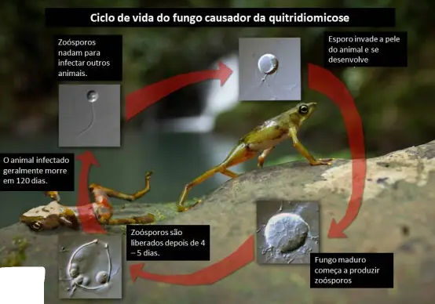

Isto é um guia para que seu anfibio não morra por conta de doenças pouco conhecidas.

Isto é video para saber a diferença entre os tres tipos de aanfibios mais conhecidos
Isto é video para saber a diferença entre os tres tipos de aanfibios mais conhecidos
Isto é um guia para que seu anfibio não morra por conta de doenças pouco conhecidas, aqui vou citar algums sintomas sobre doenças que o sapo pode ter. Aqui no link abaixo tem um guia sobre Sapos.
Em primeiro tenho que escolher algumas doenças para falar senão o texto teria mil o mais linha, então escolhi a mais famosa:
Essa doença é fatal e muito dificil de ser curada pos ela é um fungo aquatico que tem o nome de zoósporo ,
desinvolve no arganismo do anfibio por mais ou menos 120 dias, onde começa a produzir zoósporos, mas esse processo mata o anfibio o que é muito ruim e
esta fazendo com que muitas expecies entrem em extinção.
Esta doença que mata os anfibios é muito dificil de ser identificado, pois só aparece 1 ou 2 dias antes do anfibio morrer mas a prevenção tem como sim,
e não é difici pois é seguir os cuidados a seguir.
Esse é um muito importante pois como eu disse esse fungo se espalha na água, então como ele se prolifera muito, muito facil ou seja se houver um caso em um criadoro,
não pegue desse criadouro ou lago pois logo os outros vão se revelar e não vai ser legal, isso ocore por que simplesmente ele fica por 120 dias no anfibio antes de matar o anfibio.
É como se fosse uma bomba relogio...
Esse é muito sutil mas tambem louco pois sabia que esse fungo retarda o crescimento do fungo? Não? Pois é verdade o zoósporo retardo o crescimento do girino.
Com isso da pra deduzi que se você encontrar um giri fora de epoca de acasamento dos Sapos então não pegue esse girino pois:
Girino fora da epoca de acasalamento -> Crescimento retardado -> Doença causa isso. Então é triste demais sabe que bem provavel que um girino vai morrer mas...
Não da pra pula isso.
Agora passando o vou ou não vou cuidar? Vamos passar para caso seu girino ou anfibio tenha passado nisso você continua tendo que cuidar pois o fungo pode atacar.
Esse fato você ja sabe que é que o fungo transmite pela água então algo obivio é que se um lago tenha 1 caso sequer NÃO abasteca a água do seu girino ou anfibio
com água desse lago.
Um fato que não citei é que esse fungo tanbem é transmisivel por 'toque' ou seja esteja com certeza que lavou muito bem a mão antes de mexer com seu girino ou anfibio.
É muito louca mas a cura é... Salamandras! Sim a cura desse fungo são as salamandras, pois na pele de um tipo de salamandras tem uma bacteria
que combatem o fungo então para curar é recomendado você cultivar as bacterias e banhar o anfibio infectado.